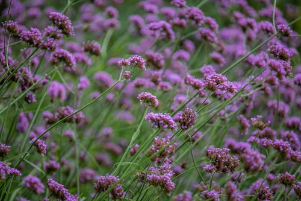

LAVANDA

O que é?
A Lavanda é uma planta herbácea perene, famosa por suas espigas de flores roxas e seu perfume relaxante. Nativa da região do Mediterrâneo, ela é amplamente cultivada para a produção de óleos essenciais, cosméticos e para fins ornamentais, sendo um ícone de tranquilidade e limpeza.
Como cuidar?
A lavanda é rústica, mas gosta de condições específicas para florescer:
- Luz: Sol pleno! Ela precisa de pelo menos 6 a 8 horas de luz solar direta por dia.
- Solo: Deve ser arenoso e muito bem drenado. Ela detesta solos encharcados, que podem apodrecer as raízes.
- Rega: Moderada. Deixe o solo secar completamente entre as regas. Depois de adulta, ela resiste bem à seca.
- Poda: Uma poda leve após a floração ajuda a manter o arbusto compacto e estimula novos crescimentos.
Curiosidades
- Etimologia: O nome vem do latim *lavare* (lavar), pois os romanos a usavam para perfumar o banho e as roupas.
- Espanta Pragas: Seu cheiro, embora delicioso para nós, ajuda a repelir traças, mosquitos e outras pragas no jardim.
- Culinária: Algumas espécies de lavanda são comestíveis e usadas em chás, sorvetes e até no tempero de carnes.
- Poder Calmante: O aroma da lavanda é cientificamente reconhecido por ajudar a reduzir a ansiedade e melhorar a qualidade do sono.